Kubeadm安装k8s1.18.1
也没事啦，就想在自己个人机子上搭建个k8s，方便自己学习，搞k8s也快一年了，加油加油！本来想买个云服务器，心想自己也没怎么用还是有点贵，穷，还是在个人机子上安装吧。
0. 序言
0.1 本文的目录
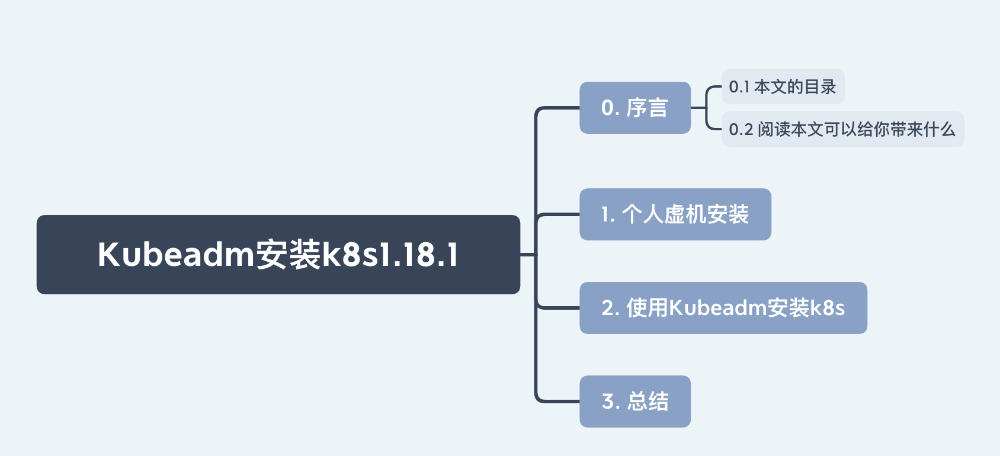
0.2 阅读本文可以给你带来什么
了解使用kubeadm安装k8s。
1. 个人虚机安装
Parallels —— Mac 系统最强虚拟机，真香！
CentOS-8.1.1911-x86_64-dvd1.iso —— 下载地址：http://isoredirect.centos.org/centos/8/isos/x86_64/CentOS-8.1.1911-x86_64-dvd1.iso
内存要大于等于 2 G ，CPU核数需要大于等于 2 核
安装完CentOS设置网卡开机启动
vim /etc/sysconfig/network-scripts/ifcfg-xxx
将其中ONBOOT参数的值改为yes,保存退出
2. 使用Kubeadm安装k8s
官网：https://kubernetes.io/docs/setup/production-environment/tools/kubeadm/install-kubeadm/
2.1 准备开始
查看下官网的要求
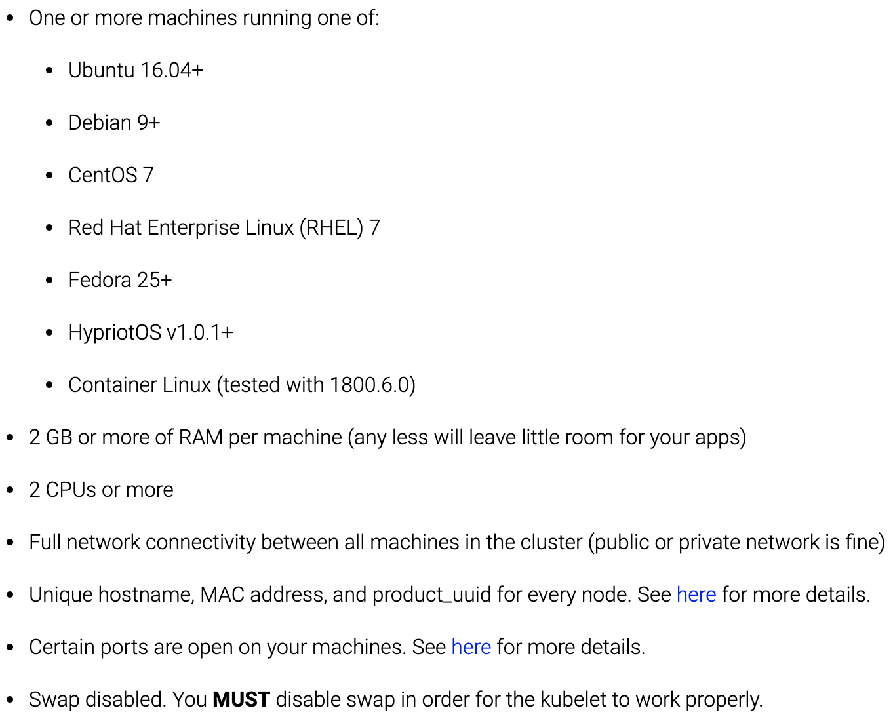
翻译一下就是如下几个要求：
- 机子的OS系统要是Ubuntu 16.04+、Debian 9+、CentOS 7…
- 机子内存要大于等于 2 G
- 机子 CPU 核数大于等于 2 核
- 集群中的所有机器的网络彼此均能相互连接(公网和内网都可以)
- 节点之中不可以有重复的主机名、MAC 地址或 product_uuid
- 开启机器上的某些端口
- 禁用交换分区，为了保证 kubelet 正常工作
2.2 禁用交换分区
验证交换分区有没有关闭
free -m
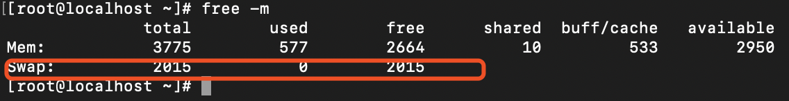
1.注释/etc/fstab关于swap的配置
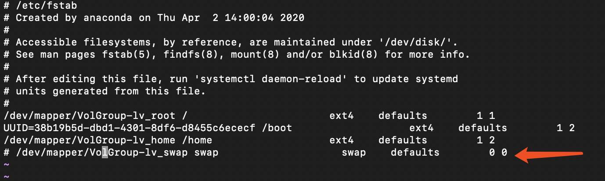
2.执行如下命令
echo vm.swappiness=0 >> /etc/sysctl.conf
3.重启
reboot
4.验证(Swap行均为0)
free -m
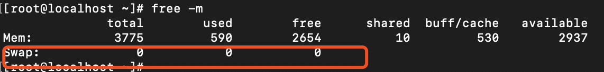
2.3 关闭防火墙
systemctl stop firewalld
systemctl disable firewalld
如果各个主机启用了防火墙，需要开放Kubernetes各个组件所需要的端口。如下图所示，详细信息请看官网。
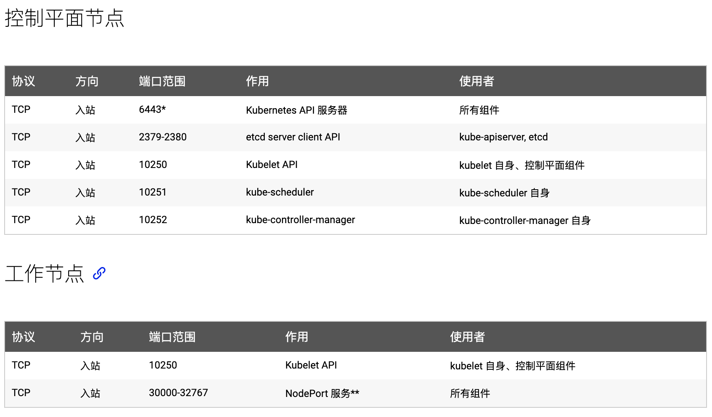
2.4 关闭SELINUX
# 临时禁用
setenforce 0
sed -i 's/^SELINUX=enforcing$/SELINUX=permissive/' /etc/selinux/config
2.5 修改k8s.conf文件
cat <<EOF > /etc/sysctl.d/k8s.conf
net.bridge.bridge-nf-call-ip6tables = 1
net.bridge.bridge-nf-call-iptables = 1
EOF
sysctl --system
2.6 确保每个节点上 MAC 地址和 product_uuid 的唯一性
- 您可以使用命令
ip link或ifconfig -a来获取网络接口的 MAC 地址 - 可以使用
sudo cat /sys/class/dmi/id/product_uuid命令对 product_uuid 校验
一般来讲，硬件设备会拥有唯一的地址，但是有些虚拟机的地址可能会重复。Kubernetes 使用这些值来唯一确定集群中的节点。 如果这些值在每个节点上不唯一，可能会导致安装失败。
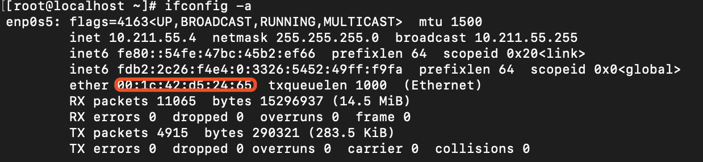
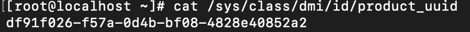
2.7 检查网络适配器
如果您有一个以上的网络适配器，同时您的 Kubernetes 组件通过默认路由不可达，我们建议您预先添加 IP 路由规则，这样 Kubernetes 集群就可以通过对应的适配器完成连接。
单网卡跳过。
2.8 安装Docker
2.8.1 卸载老版本Docker
如果没有安装老版本docker，这一步可以跳过。
yum remove docker \
docker-common \
docker-selinux \
docker-engine
2.8.2 通过yum安装Docker
# step 1: 安装必要的一些系统工具
sudo yum install -y yum-utils device-mapper-persistent-data lvm2
# Step 2: 添加软件源信息
sudo yum-config-manager --add-repo http://mirrors.aliyun.com/docker-ce/linux/centos/docker-ce.repo
# Step 3: 更新并安装 Docker-CE
yum -y install docker-ce docker-ce-selinux
# 安装指定版本的Docker-CE:
# Step 3.1: 查找Docker-CE的版本:
# yum list docker-ce.x86_64 --showduplicates | sort -r
# Step 3.2 : 安装指定版本的Docker-CE
# yum -y --setopt=obsoletes=0 install docker-ce-[VERSION] docker-ce-selinux-[VERSION]
# Step 4: 开启Docker服务
systemctl enable docker && systemctl start docker
安装Docker遇到的问题
package docker-ce-3:19.03.8-3.el7.x86_64 requires containerd.io >= 1.2.2-3, but none of the providers can be installed
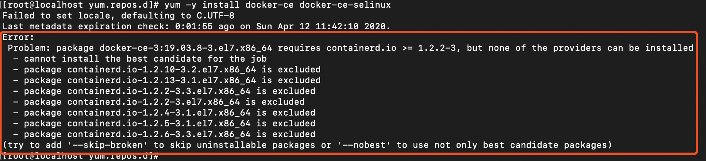
解决办法——安装container.io
# 网站 https://mirrors.aliyun.com/docker-ce/linux/centos/7/x86_64/edge/Packages
yum install -y https://mirrors.aliyun.com/docker-ce/linux/centos/7/x86_64/edge/Packages/containerd.io-1.2.6-3.3.el7.x86_64.rpm
验证安装成功
docker version
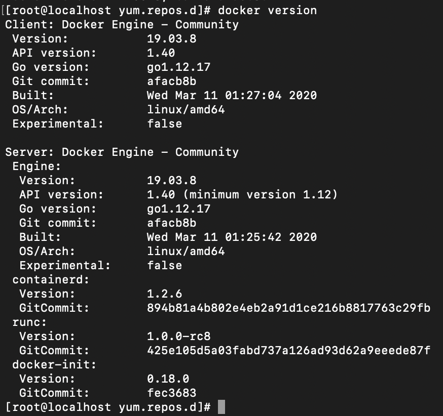
配置阿里云镜像docker加速器
cat << EOF > /etc/docker/daemon.json
{
"exec-opts": ["native.cgroupdriver=systemd"],
"registry-mirrors": ["https://0bb06s1q.mirror.aliyuncs.com"],
"log-driver": "json-file",
"log-opts": {
"max-size": "100m"
},
"storage-driver": "overlay2",
"storage-opts": ["overlay2.override_kernel_check=true"]
}
EOF
# 重启docker
systemctl daemon-reload && systemctl restart docker && systemctl enable docker.service
2.9 安装kubeadm，kubectl，kubelet
master节点安装kubeadm，kubectl，kubelet
2.9.1 添加yum源
cat <<EOF > /etc/yum.repos.d/kubernetes.repo
[kubernetes]
name=Kubernetes
baseurl=https://mirrors.aliyun.com/kubernetes/yum/repos/kubernetes-el7-x86_64/
enabled=1
gpgcheck=1
repo_gpgcheck=1
gpgkey=https://mirrors.aliyun.com/kubernetes/yum/doc/yum-key.gpg https://mirrors.aliyun.com/kubernetes/yum/doc/rpm-package-key.gpg
EOF
2.9.2 安装软件
yum install -y kubelet kubeadm kubectl
# 设置kubelet开机启动
systemctl enable kubelet && systemctl start kubelet
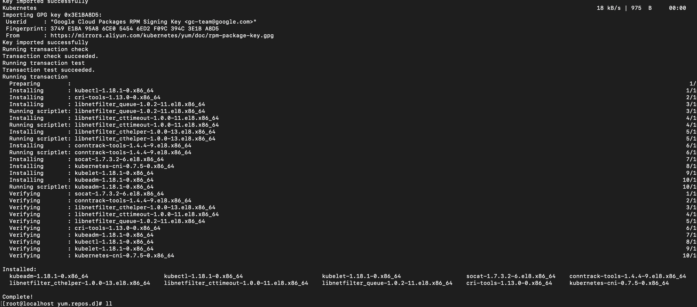
2.10 导出kubeadm集群部署自定义文件
kubeadm config print init-defaults > init.default.yaml
2.11 修改自定义配置文件
修改如下问题
- 主节点IP——advertiseAddress
- 国内阿里镜像地址imageRepository——registry.aliyuncs.com/google_containers
- pod网段配置——不同网络插件网段不一样详细见官网
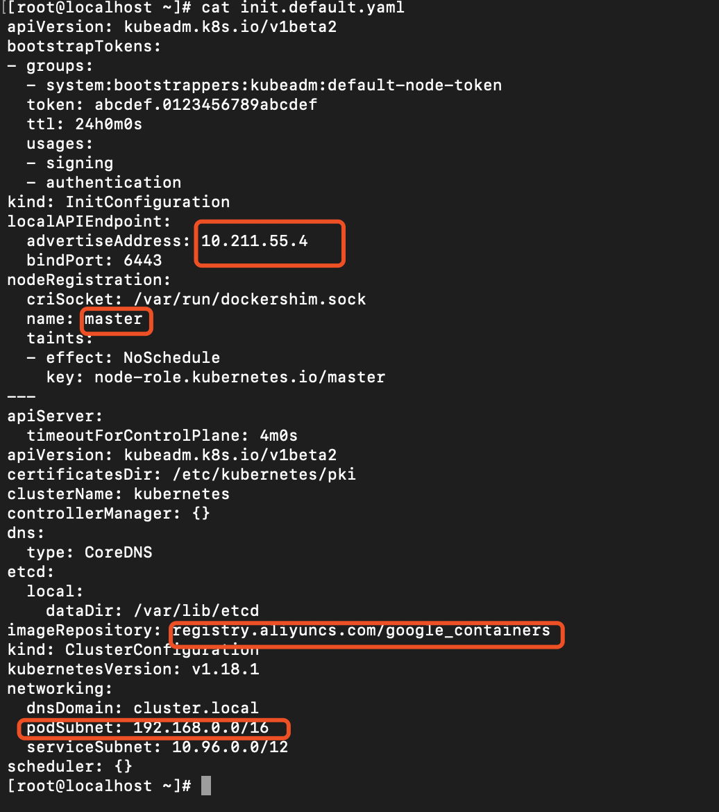
2.12 拉取阿里云kubernetes容器镜像
kubeadm config images list --config init.default.yaml
kubeadm config images pull --config init.default.yaml
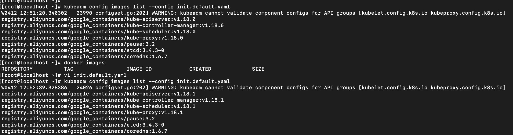
2.13 Master安装部署
kubeadm init --config=init.default.yaml
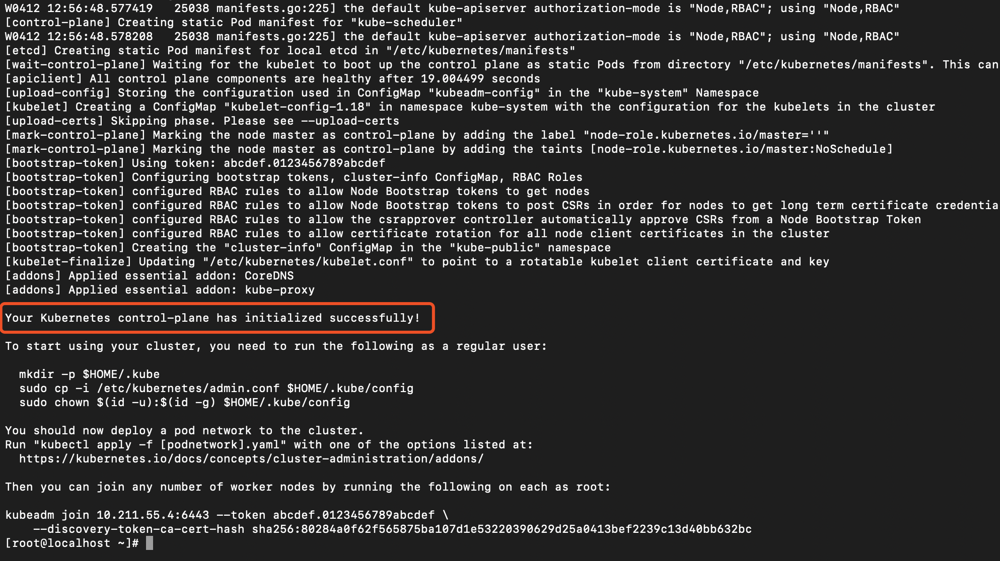
2.14 配置用户证书
mkdir -p $HOME/.kube
sudo cp -i /etc/kubernetes/admin.conf $HOME/.kube/config
sudo chown $(id -u):$(id -g) $HOME/.kube/config
2.15 查看集群状态
kubectl get node
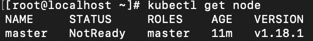
notready原因是没有安装pod网络。
2.16 安装pod网络——Calico
不同pod网络对pod网段要求不一样见官网。我这边安装的是Calico。
kubectl apply -f https://docs.projectcalico.org/v3.11/manifests/calico.yaml
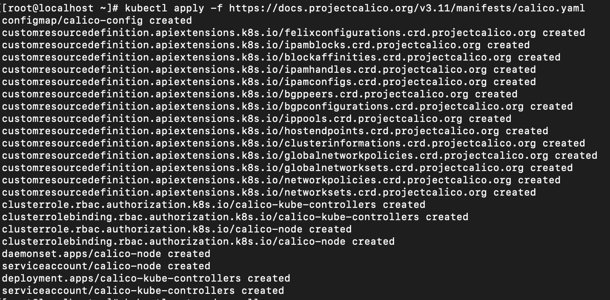
2.17 添加Node节点
课查看官网
# token和hash 下面会介绍如何获取
# control-plane-host和control-plane-port分别是控制面对应的ip和端口
kubeadm join --token <token> <control-plane-host>:<control-plane-port> --discovery-token-ca-cert-hash sha256:<hash>
查看token
kubeadm token list
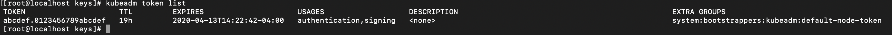
token24小时过期
# 重新创建 token
kubeadm token create
# 创建discovery-token-ca-cert-hash
openssl x509 -pubkey -in /etc/kubernetes/pki/ca.crt | openssl rsa -pubin -outform der 2>/dev/null | \
openssl dgst -sha256 -hex | sed 's/^.* //'
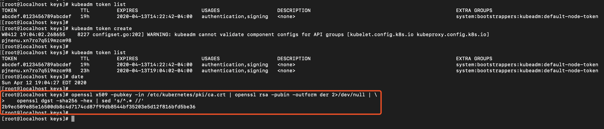
2.18 重置
kubeadm reset
3. 总结
本文简单的讲述了如何使用kubeadm在Centos8安装k8s1.18.1版本。
参考
- 原文作者：萝卜头LJW
- 原文链接：https://robotljw.github.io/post/2020-4-16-kubeadm-install-k8s/
- 版权声明：本作品采用知识共享署名-非商业性使用-禁止演绎 4.0 国际许可协议进行许可，非商业转载请注明出处（作者，原文链接），商业转载请联系作者获得授权。